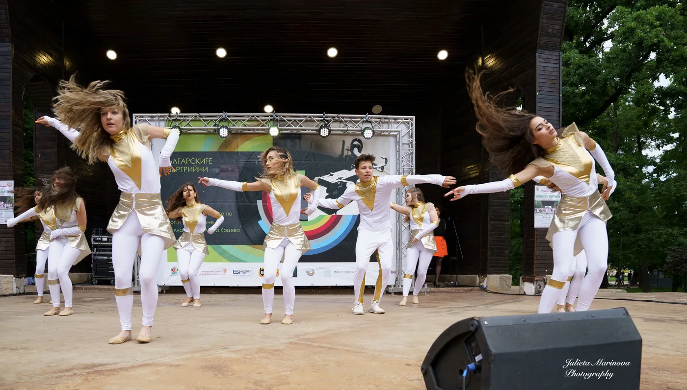

7 зали в София
Изберете удобна локация за заниманията по модерен балет и модерни танци. Тук са събрани седемте актуални зали на Veda Junior с преки връзки към картите.
Свържете се с нас
Къде провеждаме занимания
Veda Junior работи в седем зали в различни райони на София. Списъкът е съобразен с актуалните локации от началната страница, а не с историческите адреси на школата. Изберете удобна зала и попитайте по телефона за подходящата група, свободните места и конкретните дни и часове.
ОКИ „Средец“ — до паметника Васил Левски
Локацията в централната част на София е представена и на началната страница като нова зала.
Отворете локацията в Google Maps · Попитайте за заниманията.
Стадион „Славия“
Залата на стадион „Славия“ е втората нова локация, отбелязана на началната страница.
Отворете локацията в Google Maps · Попитайте за заниманията.
кв. „Гео Милев“
Ориентир: сградата на ИЧС / Департамента за езиково обучение, ул. „Коста Лулчев“ 27.
Отворете локацията в Google Maps · Попитайте за заниманията.
ОКИ „Надежда“
За точния маршрут използвайте актуалния Google Maps маркер.
Отворете локацията в Google Maps · Попитайте за заниманията.
ж.к. „Люлин“
За точния маршрут използвайте актуалния Google Maps маркер.
Отворете локацията в Google Maps · Попитайте за заниманията.
кв. „Стрелбище“
Използвайте точния маркер в картата, вместо старите адреси от архивния сайт.
Отворете локацията в Google Maps · Попитайте за заниманията.
кв. „Стефан Караджа“
За точния маршрут използвайте актуалния Google Maps маркер.
Отворете локацията в Google Maps · Попитайте за заниманията.
Как да изберете зала за детето
При запитване посочете възрастта и опита на детето, както и кой район на София е най-удобен за семейството. Екипът ще уточни подходящата група и актуалното разписание. Не всички групи и часове непременно се предлагат във всяка локация; потвърдете информацията, преди да посетите залата.
Прочетете информацията за групите и записването или се запознайте с детската школа по танци.
Искаш да танцуваш с нас?
Записването в детската танцова школа става по телефон.
0888 769 0270888 581 430